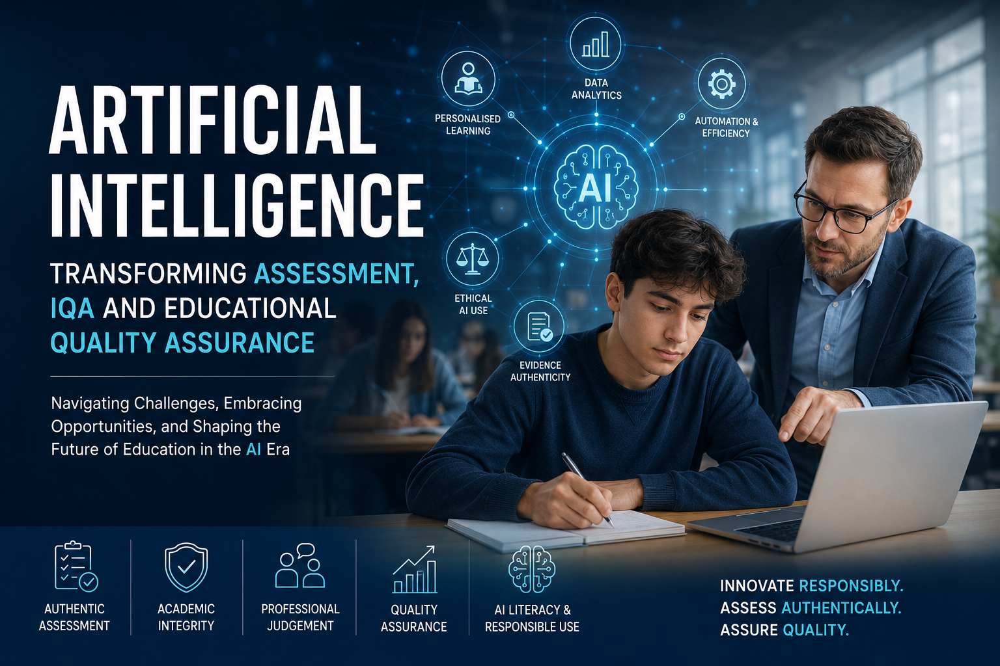

Exploring how AI is reshaping assessment authenticity, quality assurance, learner support, professional judgement, educational governance, and the future of modern education.

Artificial Intelligence is rapidly transforming the global educational landscape. What was once viewed as an emerging technological innovation has now become part of everyday teaching, learning, assessment, and administrative practice across schools, colleges, universities, training providers, and professional education environments.
AI-powered systems such as ChatGPT, Microsoft Copilot, and Gemini are increasingly being used by learners, educators, assessors, and organisations to support research, generate content, improve communication, automate processes, and enhance learning experiences.
The rapid growth of generative AI has created both significant opportunities and major challenges for the education sector. AI technologies can improve accessibility, personalise learning, reduce administrative workload, strengthen learner support, and modernise educational delivery. At the same time, the rise of AI-generated content has raised serious concerns regarding academic integrity, evidence authenticity, ethical AI use, and the long-term validity of traditional assessment models.
Assessment has traditionally been one of the central mechanisms used to measure learner understanding, competence, and academic progress. However, generative AI is fundamentally transforming how assessment must now be designed, delivered, and quality assured.
One of the most significant challenges created by AI is the growing difficulty in determining the authenticity of learner evidence. AI systems can produce highly structured and academically convincing responses within seconds.
As a result, educational providers are increasingly recognising that traditional written assessment methods alone are no longer sufficient for validating authentic learning.
Professional discussions are becoming increasingly valuable because assessors can evaluate whether learners genuinely understand the evidence they have submitted. Follow-up questions allow assessors to explore reasoning, application, confidence, and real-world understanding.
Similarly, workplace observation remains critically important because practical performance is significantly harder to replicate artificially through AI-generated content alone.
The emergence of Artificial Intelligence within education is not only transforming assessment practices, but also significantly reshaping the role of Internal Quality Assurance.
Traditionally, IQA processes focused primarily on ensuring that assessment decisions were fair, valid, reliable, consistent, and compliant with awarding body requirements. While these responsibilities remain essential, AI-generated content has introduced a new and increasingly complex challenge: verifying the authenticity and credibility of learner evidence.
Importantly, modern IQAs are increasingly recognising that they should not become “AI police.” Overly aggressive monitoring approaches may damage trust and create fear within learning environments.
Frameworks such as holistic assessment planning, CAMERA sampling methodologies, and RAG-based monitoring systems are becoming increasingly valuable within AI-aware quality assurance environments.
Educational quality assurance is increasingly shifting from a purely compliance-driven process toward a broader governance and integrity-based approach.
Modern quality assurance systems must now address several critical questions:
Educational providers are increasingly recognising that outright bans on AI are unlikely to succeed long term. Instead, many institutions are moving toward responsible integration frameworks where AI is used transparently, ethically, and critically.
This represents a major cultural shift within education.
AI systems can produce inaccurate information, fabricated references, misleading explanations, and biased outputs while presenting information confidently and convincingly.
Educational institutions must therefore increasingly emphasise critical evaluation and information verification skills as part of modern digital and AI literacy.
Artificial Intelligence is not inherently harmful to education. When implemented responsibly, it has the potential to improve accessibility, strengthen learner support, reduce administrative burden, enhance personalisation, and modernise quality assurance systems.
Educational institutions therefore have an important responsibility to prepare learners not only to use AI tools, but also to understand AI limitations, ethical responsibilities, information verification, and responsible digital practice.
The most successful educational organisations in the future are likely to be those that combine technological innovation with strong governance, authentic assessment practices, and learner-centred quality assurance systems.
The future of assessment is likely to move away from models that rely heavily on information reproduction and toward approaches that focus more strongly on applied competence, critical thinking, professional judgement, and real-world performance.
Future quality assurance frameworks are also likely to incorporate:
Importantly, the future of education is unlikely to involve AI replacing educators entirely. Instead, educational professionals will adapt their roles in response to technological change while continuing to provide mentorship, communication, contextual understanding, and ethical leadership.
Educational organisations should approach AI strategically rather than reactively. Responsible implementation requires governance, staff development, authentic assessment design, and balanced quality assurance systems.
A vocational training provider notices that learner assignments across several units are becoming increasingly polished and technically advanced. Instead of relying on AI detection software alone, the provider strengthens professional discussions, observation activities, and reflective questioning. IQAs introduce more authenticity-focused sampling while assessors redesign assessments to require real-world application and scenario-based reasoning. As a result, the organisation improves confidence in learner competence while still allowing responsible AI-supported learning.